와전류비파괴검사기사 (2017-05-07 기출문제)
1과목: 비파괴검사 개론
1. 자분탐상시험과 비교한 침투탐상시험의 특징으로 틀린 것은?
- 조작 단계가 독립적이며, 각각의 단계별 절차를 지키는 것이 중요하다
- 표면으로 열린 결함이라도 결함 안에 이물질로 채워져 있으면 검출하기 어렵다.
- 일반적으로 자분탐상시험은 시간이 경과하여도 지시모양이 변하지 않으나 참투탐상시험은 변한다.
- 자분탐상시험에 비해 침투탐상시험은 온도의 영향을 적게 받으므로 온도변화에 의한 탐상이 유리하다.
(정답률: 72%)

2. 다음 중 시험체의 박막 두께 측정에 이용되는 비파괴검사법은?
- 침투탐상시험
- 방사선투과시험
- 음향방출시험
- 와전류탐상시험
(정답률: 86%)
3. 방사선 투과시험에서 현상액의 온도가 규격에 화씨(°F)로 되어 있어 섭씨온도로 변환시켜 측정된 값과 비교하고자 한다. 다음 중 화씨온도(°F)를 섭씨온도(℃)로 변환하는 식으로 옳은 것은?
- ℃=5/9×(°F-32)
- ℃=(°F×5/9)+32
- ℃=(°F×5/9)+460
- ℃=(°F×5/9)+270
(정답률: 80%)
4. 재료 내부의 동적거동을 비파괴적으로 평가하는 시험은?
- 방사선투과시험
- 자분탐상시험
- 와전류탐상시험
- 음향방출시험
(정답률: 82%)
5. 초음파누설검사의 장점이 아닌 것은?
- 특별한 추적가스사 필요치 않다.
- 잡음신호가 발생될 때에도 검사가 가능하다.
- 누설 시 음파가 발생하면 어떤 유체에도 사용이 가능하다.
- 대기 중으로 누설이 존재하여 음파를 발생할 때 측정이 가능하다.
(정답률: 68%)
6. 열팽창 계수가 대단히 작아 바이메탈에 사용되는 인바(Invar)는 철(Fe)에 Ni 이 어느 정도 함유되어 있는가?
- 17%
- 23%
- 36%
- 47%
(정답률: 62%)
7. 마그네슘합금에 첨가되어 결정립 미세화 효과를 잘 나타내는 합금 원소는?
- Th
- Be
- Ca
- Zr
(정답률: 58%)
8. 금속 분말의 유동성에 영향을 미치는 인자가 아닌 것은?
- 분말의 조직
- 분말의 수분 함량
- 분말의 입도 및 형상
- 분말과 용기 사이의 마찰 계수
(정답률: 60%)
9. 인장시험에서 비례한도내의 응력(σ)-변형(ε)곡선으로부터 얻어지는 탄성률(young's modulus) E의 관계식으로 옳은 것은?
- ε/σ
- σ/ε
- ε·σ
- ε2/σ
(정답률: 72%)
10. 황동의 가공재에서 발생하는 자연균열(season cracking)을 방지하기 위한 방법이 아닌 것은?
- 응력제거풀림을 실시한다.
- 암모니아 분위기에서 일정시간 유지시켜 준다.
- 도료를 도포하거나 혹은 아연도금을 행한다.
- (α+β)황동 및 β황동에는 Sn을 첨가하거나 1∼1.5%의 Si을 첨가한다.
(정답률: 72%)
11. 합금강에 첨가되는 합금원소의 효과를 설명한 것 중 틀린 것은?
- Ni는 내산성을 증가시킨다.
- Mo는 뜨임 메짐을 조장한다.
- Mn은 적열 메짐을 방지한다.
- W는 함유량이 많아지면 탄화물 생성을 용이하게 한다.
(정답률: 60%)
12. 철강 재료의 내마모성을 향상시키기 위한 방안으로 옳은 것은?
- 탄소의 함량을 낮게 한다.
- 내부 조직을 조대화 한다.
- 담금질 한 후 풀림처리 한다.
- 표면에 Cr, B 등을 침투시킨다.
(정답률: 55%)
13. 스테인리스강의 조직에 따른 분류가 아닌 것은?
- 페라이트형
- 시멘타이트형
- 마텐자이트형
- 석출경화형(PH계)
(정답률: 66%)
14. 희주철에 대한 일반적인 특성으로 틀린 것은?
- 상온에서 소성변형이 용이하다.
- 강에 비해 연신율이 작다.
- 주조성이 양호하다.
- 메짐성이 있다.
(정답률: 41%)
15. 실루민에 Cu, Ni, Mg 등을 첨가하여 내열성이 우수하고 열팽창이 적어 피스톤 재료에 널리 쓰이는 Al 합금은?
- 라우탈
- 로우엑스
- 스텔라이트
- 하이드로날륨
(정답률: 58%)
16. 일명 비석법이라고도 하며, 용접 길이를 짧게 나누어 간격을 두면서 용접하는 방법으로 다른 용착법에 비해 잔류응력을 적게 발생시키는 용착법은?
- 전진법
- 스킵법
- 덧살 올림법
- 캐스케이드법
(정답률: 71%)
17. 아크 용접기의 1차측 입력이 20kVA인 경우 가장 적합한 퓨즈의 용량은? (단, 이 용접기의 전원전압은 200V이다.)
- 100A
- 120A
- 150A
- 200A
(정답률: 72%)
18. 아크 쏠림의 방지 대책으로 틀린 것은?
- 접지점 2개를 연결한다.
- 접지점을 용접부에서 멀리한다.
- 아크 길이를 길게 하여 용접한다.
- 용접봉 끝을 아크 쏠림 반대 방향으로 기울인다.
(정답률: 73%)
19. 용접 후 변형을 교정하기 위한 방법이 아닌 것은?
- 피닝법
- 역변형법
- 형재에 대한 직선 수축법
- 얇은 판에 대한 점 수축법
(정답률: 56%)
20. 불활성 가스 텅스텐 아크 용접에서 주로 사용되는 보호 가스는?
- 수소
- 메탄
- 아르곤
- 아세틸렌
(정답률: 74%)
2과목: 와전류탐상검사 원리
21. 막대자석이 코일의 전기 자기장 안에 놓여 있을 때 코일의 리엑턴스는 증가한다. 이런 현상의 원인은?
- 코일이 자기적으로 포화되기 때문
- 투자율이 시험용 코일의 인덕턴스를 증가시키기 때문
- 막대자석의 전도도가 코일의 리액턴스 값을 증가시키기 때문
- 이런 현상의 수학적 공식은 2B/H=μ 임.
(정답률: 57%)
22. 와전류탐상시험에서 두 검사 코일 사이에 브리지회로를 사용하는 이유로 올바른 것은?
- 회로의 저항률을 감소시키기 위해서
- 임피던스의 변화를 쉽게 검출하기 위해서
- 회로의 전도도를 증가시키기 위해서
- 시스템의 감도를 감소시키기 위해서
(정답률: 60%)
23. 시험체에서 코일의 임피던스에 영향을 미치는 인자들로 구성된 것은?
- 전도율, 투자율, 치수변화, 결함
- 투자율, 결함, 치수변화, 시험체 무게
- 전도율, 결함, 시험체 무게, 투자율
- 전도율, 충진율, 시험체 무게, 투자율
(정답률: 68%)
24. 와전류탐상시험에서 포용코일로 결함을 탐상 시 보정결함을 상하, 좌우 위치에서 여러 번 측정하는 목적은?
- 적당한 동작속도를 선별하기 위하여
- 주파수 분석을 위하여
- 검사 코일에 시험체가 정확히 가운데 위치되었나를 확인하기 위하여
- 위상분석을 위하여
(정답률: 72%)
25. 다음 중 알루미늄에 제일 큰 와전류 침투능력을 갖는 주파수는?
- 1kHz
- 10kHz
- 3kHz
- 300kHz
(정답률: 62%)
26. 와류탐상시험에서 다음 중 결함 깊이의 분해능을 최대로 하는 주파수는?
- 1kHz
- 100kHz
- 500kHz
- 1MHz
(정답률: 63%)
27. 검사부품의 특성변화로 인한 와전류검사 코일의 임피던스 변화는 다음 변수 중에서 어떤 조합일 때 가장 쉽게 분석할 수 있는가?
- 용량리액턴스와 저항
- 조화주파수와 유도 리액턴스
- 신호진폭과 위상
- 잔류자기와 조화주파수
(정답률: 63%)
28. 와전류 탐상법에서 일정한 주파수에 대한 침투 깊이가 가장 작은 재질은?
- 스테인리스강
- 알루미늄
- 지르코늄
- 강
(정답률: 43%)
29. 코일의 등가회로에 있어서 전압 V, 전류 I, 저항 R, 인덕턴스 L, 임피던스 Z, 전압과 전류의 위상차 θ의 관계를 표시한 것 중 옳은 것은?
- Z=I/V
- V=Z/I
- tanθ=wL/R
- I=VR
(정답률: 54%)
30. 관통 코일을 이용한 비자성체의 와전류탐상시험에서 검사속도가 빠를수록 기록계에 나타나는 결함 신호의 진폭이 작아지는 이유는?
- 응답성 이하의 낮은 주파수 성분을 갖는 결함 신호가 입력되기 때문
- 응답성 이상의 높은 주파수 성분을 갖는 결함 신호가 입력되기 때문
- 이송장치의 빠른 이동으로 잡음 제거 능력이 저하되기 때문
- 의사 신호와 결함 신호가 혼합되어 분별능력이 저하되기 때문
(정답률: 50%)
31. 그림과 같이 내삽형 자기비교형 차동코일을 화살표 방향으로 이동할 때 현재 상태에서 신호의 궤적은?
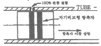
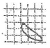
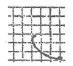
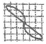
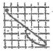
(정답률: 60%)
32. 신호대 잡음비(S/N ratio)를 개선하는 방법이 아닌 것은?
- 시험주파수 변화
- 커플링(coupling) 개선
- 필터회로 부가
- 프로브 이송속도 증가
(정답률: 63%)
33. 강관을 자기포화 시키면 다음 중 어떤 인자가 가장 큰 영향을 받는가?
- 충진율
- 투자율
- 전기전도도
- 열전도도
(정답률: 62%)
34. 와전류탐상시험에서 표면코일의 몸체 내부에 스프링 부하 장치를 사용하는 명확한 장점은 무엇에 의해 생기는 오차를 줄일 수 있기 때문인가?
- 장비의 편향
- 리프트 오프 효과
- 표피효과
- 속도효과
(정답률: 53%)
35. 직경 20mm, 두께 2mm 동파이프 외면에 직경 4mm, 깊이 0.4mm의 평저공 결함 4개를 동일한 축방향 위치에 원주방향으로 90° 간격을 두고 가공하고, 이로부터 축방향으로 50mm 떨어진 위치에 같은 사양으로 1개의 결함을 가공하여 검사하였다. 두 위치에서 검출된 신호된 옳은 설명은?
- 신호의 진폭과 위상각이 2배 차이 난다.
- 신호의 진폭은 같고, 4개 결함의 위상각이 4배 적다.
- 신호의 위상각은 같고, 1개 결함위치의 신호진폭이 크다.
- 신호의 위상각은 같고, 4개 결함위치의 신호진폭이 크다.
(정답률: 54%)
36. 와전류의 표준침투 깊이가 1mm이고, 시험체의 두께가 2mm이다. 시험체 뒷면에서의 와전류 밀도는 코일 쪽 표면에서의 와전류 밀도의 약 몇 % 정도인가?
- 37%
- 25.5%
- 13.5%
- 5%
(정답률: 53%)
37. Fill-factor나 lift-off를 일정하게 유지함이 바람직한 이유는?
- coil나 시편간의 arc를 피하기 위하여
- 코일의 진동에 의한 잡음신호를 극소화시키기 위하여
- 탐촉자에 발진되는 교류의 주파수를 일정하게 유지시키기 위하여
- 일정교류의 여기(excitation)회로의 부하를 극소화 시키기 위하여
(정답률: 50%)
38. 와전류탐상검사 시 시험물의 특성주파수(fg)가 150Hz이고 f/fg 비가 12라면 시험주파수 (f)는?
- 1.8 kHz
- 1.25 kHz
- 12.5 kHz
- 0.18 kHz
(정답률: 57%)
39. 와류탐상시험의 변조분석에서 일반적으로 사용되는 표시의 형태는?
- 디지털 볼트계(Digital voltmeter)
- 음극선관(Cathod ray tube)
- 도표 기록계(Chart recorder)
- 아날로그미터(Analogmeter)
(정답률: 34%)
40. 주파수가 아주 높은 와류의 흐름은 전도체가 매우 얇은 외부층으로 제한되어 흐르는데 이러한 현상은 무엇이라 하는가?
- 표피 효과(skin effect)
- 모서리 효과(edge effect)
- 리프트오프 효과(lift off effect)
- 끝부분 효과(end effect)
(정답률: 71%)
3과목: 와전류탐상검사 시험
41. 와전류탐상시험에서 이중 코일형에 대한 설명으로 옳은 것은?
- 자기비교형 코일 배열 방법의 일종이다.
- 상호비교형 코일 배열 방법이며 출력계를 하나 사용한다.
- 상호비교형 코일 배열 방법의 일종이며 출력계를 두 개 사용한다.
- 절대법의 코일 배열 방법에 속한다.
(정답률: 18%)
42. 관통형 코일에 의해 튜브에 유도된 와전류의 흐르는 방향은?
- 튜브의 축방향으로 흐른다.
- 튜브의 원주방향으로 흐른다.
- 코일 권선과 45° 각도로 기울어 흐른다.
- 튜브의 관벽에 대하여 방사상으로 흐른다.
(정답률: 64%)
43. 외경이 25.4mm이고 두께가 2mm인 탄소강관을 주파수 8kHz로 탐상하여 좋은 결과를 얻었다. 외경이 50.8mm이고 두께가 4mm인 동질의 재료를 같은 조건으로 탐상하기 위해서는 주파수를 얼마로 해야 하는가?
- 2 kHz
- 8 kHz
- 16 kHz
- 32 kHz
(정답률: 49%)
44. 결함 등으로 인한 코일의 임피던스 변화를 전기적 신호호 교환하는 중요한 작용을 하는 탐상장치의 구성부는?
- 브릿지 회로(Bridge circuit)
- 발진기(Generator)
- 동기 검파기
- 증폭기(Amplifier)
(정답률: 82%)
45. 비자성 재료의 재질시험을 실시할 때 주의할 사항으로 잘못된 것은?
- 표면코일은 시험품의 평면부에 수직하여야 한다.
- 시험품에 곡률이 있는 경우 치구를 이용한다.
- 와전류의 침투깊이는 시험체의 두께보다 충분히 두꺼워야 한다.
- 장치는 충분히 워밍업하여 사용해야 한다.
(정답률: 58%)
46. 상호유도형 검사코일 장치에서 감지코일이 여자코일 근처에 놓였을 때 다음 중 옳은 것은?
- 양 코일에 관통하는 자속은 전혀 다르다.
- 감지 코일로부터의 신호로 검사체에 관한 정보를 얻는 데 사용될 수 있다.
- 위 검사코일 배열은 작은 결함을 검출할 수 없다.
- 검사속도를 높일 수 있다.
(정답률: 59%)
47. 강관을 4kHz 로 와전류탐상하여 좋은 결과를 얻었다. 관의 외경과 두께가 각각 절반으로 된 경우의 시험주파수는?
- 2 kHz
- 4 kHz
- 8 kHz
- 16 kHz
(정답률: 40%)
48. 환봉에 대하여 와전류탐상시험을 할 때 자기포화를 행하는 이유로 올바른 것은?
- 저항을 작게 하기 위하여
- 와전류를 발생시키기 위하여
- 전도도의 영향을 없애기 위하여
- 투자율의 영향을 없애기 위하여
(정답률: 61%)
49. 차동형 코일로 밸런스를 맞추고자 할 경우 다음 중 가장 적절한 코일의 배치상태는?
- 두 코일 모두 표준시험편의 결함 부위에 위치시킨다.
- 두 코일 모두 표준시험편의 건전한 부분에 위치시킨다.
- 한 코일은 표준시험편의 건전한 부분에 다른 코일은 검사체의 결함 부위에 위치시킨다.
- 한 코일은 표준시험편의 건전한 부분에 다른 코일은 검사체의 건전한 부위에 위치시킨다.
(정답률: 63%)
50. 다음 그림은 와전류탐상장치의 CRT상에 결함신호(S)와 잡음신호(N)를 나타낸 것이다. 올바른 위상 결정은?
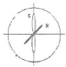
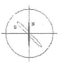
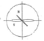
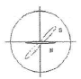
(정답률: 60%)
51. 관통코일을 이용한 환봉강의 와전류탐상 시험에서 가장 검출하기 쉬운 것은?
- 길이가 긴 균열
- 압연방향으로 단속적인 선형결함
- 미세한 독립결함
- 전장에 걸쳐 있는 압연 덧살
(정답률: 50%)
52. 작은 Lift-off의 변화에 의해 생성된 임피던스 변화가 최대일 때는?
- 시험체의 비전도성 도료가 있을 때
- 시험체에 코일이 접촉될 때
- 낮은 시험 주파수를 사용할 때
- 큰 직경 코일을 사용할 때
(정답률: 61%)
53. 다음 중 펜케이크 코일을 사용하는 검사가 아닌 것은?
- 열교환기용 전열관의 검사
- 열간에서의 선재 탐상
- 항공기 엔진 브레이드의 탐상
- 코팅두께 측정
(정답률: 37%)
54. 와전류탐상시험에서 여자 코일 주변의 자기차폐는 무슨 용도인가?
- 와전류 침투력을 감소시키면서 자계 확장력(magnetic field extension)을 증가시키기 위해
- 와전류 침투력과 자계 확정력을 증대시키기 위해
- 와전류 침투력을 증가시키면서 자계 확장력 (magnetic field extension)을 감소시키기 위해
- 와전류 침투력과 자계 확정력을 감소시키기 위해
(정답률: 34%)
55. 와전류탐상검사 시 결함은 와전류 방향에 대해서 어떻게 배치되었을 때 탐지하기 쉬운가?
- 와전류가 결함 방향과 평행할 경우
- 와전류가 결함 방향과 수직한 경우
- 와전류가 결함 방향과 중첩된 경우
- 코일의 전류 방향이 결함 방향과 90°를 이룬 경우
(정답률: 73%)
56. 관의 외면에 발생한 작은 결함은 내삽형 보빈프로브 검사에서 검사 주파수에 따라 신호의 위상변화가 어떤 특성을 보이는가?
- 주파수 증가에 따라 시계 방향으로 회전
- 주파수 증가에 따라 반시계 방향으로 회전
- 작은 결함이므로 주파수를 바꾸어도 위상각이 변하지 않음.
- 주파수 증가에 대하여 위상각은 변하지 않고 진폭만 증가함.
(정답률: 45%)
57. 발전 설비의 열교환기 튜브에 발생되는 일반적인 결함은?
- 수축공
- 열처리 균열
- 침식
- 부식
(정답률: 52%)
58. 관을 내삽형 코일로 와전류탐상 시 그림 중에서 관통 결함의 지시는 어는 것인가?
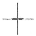
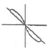
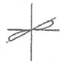
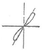
(정답률: 67%)
59. 타원 표시를 나타내는 검사장치에 대한 설명으로 맞지 않은 것은?
- 차동 코일을 사용한다.
- 수직 및 수평신호는 주파수의 차이를 갖는다.
- 치수 변화는 전압의 변화를 수반하므로 CRT상에 경사진 직선 형태로 나타난다.
- 균열 등의 불연속부는 코일의 전도성 변화를 가져오므로 CRT 상에 타원형의 신호를 나타낸다.
(정답률: 23%)
60. 판재의 표면과 표면 근처의 결함을 와전류탐상시험으로 탐지하고자 할 때 우선적으로 고려해야 할 시험 주파수는?
- 탐촉자 운용점이 임피던스 다이어그램의 꼭지점에 가까운 주파수
- 침투깊이를 최대로 하는 주파수
- 탐촉자와 시편의 결합을 최대로 하는 주파수
- 결함과 탐촉자의 흔들림 신호가 잘 구분되는 주파수
(정답률: 43%)
4과목: 와전류탐상검사 규격
61. 강관의 와류탐상검사 방법(KS D 0251)에 따라 강관을 와류탐상 검사한 후 보고서 작성 시 포함되지 않아도 되는 사항은?
- 관의 종류 기호 및 치수
- 탐상장치와 탐상 코일
- 탐상속도와 펄스 반복주파수
- 탐상감도 구분 및 사용 비교 시험편
(정답률: 47%)
62. 강관의 와류탐상검사 방법(KS D 0251)에 따라 이음매 없는 강관을 10시간 연속적으로 검사한다면 최소한의 감도확인 횟수는?
- 1회
- 2회
- 3회
- 4회
(정답률: 70%)
63. 강의 와류탐상 시험방법(KS D 0232)에서 대비시험편으로 탐상기를 보정한 후 시험체를 탐상한 결과 흠의 확인시에 얻어진 지시가 의심스러울 때의 조치 내용으로 올바른 것은?
- 불합격시킨다.
- 탐상기를 재보정하여야 한다.
- 대비시험편을 다른 것으로 교환한 후 재보정한다.
- 재시험 또는 다른 방법으로 확인한다.
(정답률: 62%)
64. 강의 와류탐상 시험방법(KS D 0232)에서 시험체의 바깥지름이 20mm이고 시험코일 권선의 안지름과 바깥지름이 각각 21mm 및 23mm일 때 충전율은 얼마인가?
- 76%
- 83%
- 87%
- 91%
(정답률: 60%)
65. 동 및 동합금관의 와류탐상 시험방법(KS D 0214)에 의해 동 합금관을 탐상하여 검출된 신호 중 대비결함 신호 이상으로 나타났으나 해로움이 없는 것으로 판단되는 요소가 아닌 것은?
- 상처
- 비트 절삭 흔적
- 자기 잡음
- 기름에 의한 흔적
(정답률: 42%)
66. 동 및 동합금관의 와류탐상 시험방법(KS D 0214)에 의한 동 및 동합금관을 와류탐상시험할 때 합격으로 판정할 수 있는 것은?
- 대비결함의 신호와 동등 이상의 신호가 검출되기 않은 동관
- 교정마크가 아닌 결함으로 대비결함의 신호보다 동등 이상인 동관
- 비트 절삭 흔적이 아닌 결함으로 대비결함의 신호보다 동등 이상인 동합금관
- 상처가 아닌 결함으로 육안검사 시 해로움이 있는 것으로 판단되는 경우
(정답률: 70%)
67. 티타늄관의 와류탐상검사 방법(KS D 0074)에서 규정한 탐상감도는 적어도 몇 시간마다 점검하는가?
- 1
- 4
- 6
- 8
(정답률: 74%)
68. 동 및 동합금관의 와류탐상 시험방법(KS D 0214)에서 규정하고 있는 시험장치의 감도 및 기타 설정조건의 조정 또는 점검을 위하여 사용하는 대비 시험편에 관한 설명으로 틀린 것은?
- 대비 시험편은 시험체와 동일한 종류, 재질, 치수의 것을 사용한다.
- 드릴 구멍의 크기는 관의 치수에 관계 없이 일정하게 한다.
- 드릴 구멍의 치수 허용치는 약 0.⑤mm로 한다
- 대비 시험편의 드릴 구멍은 관의 길이방향에 3개로 하며, 신호의 분리가 충분히 가능하여야 한다.
(정답률: 71%)
69. 강의 와류탐상 시험방법(KS D 0232)에서 규정한 지정 사항에 반드시 포함되는 내용과 거리가 먼 것은?
- 대비시험편
- 시험 결과
- 시험장치 및 시험코일
- 시험순서 등의 시험조건
(정답률: 53%)
70. 강의 와류탐상 시험방법(KS D 0232)에서 규정한 시험 주파수 범위는?
- 1∼102kHz
- 1∼2024kHz
- 0.5∼1024kHz
- 0.5∼2024kHz
(정답률: 58%)
71. 강의 와류탐상 시험방법(KS D 0232)에서 규정하고 있는 시험코일의 표시방법에 따른 올바른 표시기호는?
- MA-20-24
- CA-24-20
- BS-20-24
- BM-24-20
(정답률: 52%)
72. 강의 와류탐상 시험방법(KS D 0232)에서 규정하는 시험 코일의 시험체에 대한 충전율 계산식으로 맞는 것은? (단, η:충전율, d:시험체의 바깥지름, D:시험코일 권선의 평균지름이다.)
- η=d2/D2×100(%)
- η=d/D2×100(%)
- η=d2/D×100(%)
- η=d/D×100(%)
(정답률: 74%)
73. 강의 와류탐상 시험방법(KS D 0232)에 의해 사용된 코일이 SB-20-22로 표기되어 있을 때 마지막 두 자리는 무엇을 의미하는가?
- 관통 구멍의 지름이 22mm이다.
- 관통 구멍의 지름이 0.22inch이다.
- 코일이 감긴 평균 지름이 22mm이다.
- 코일이 감긴 평균 지름이 0.22inch이다.
(정답률: 60%)
74. 보일러 및 압력 용기에 대한 표준 와전류탐상검사(ASME Sec.V Art.26 SE-243)에서 대비 표준시험편에 반지름 방향으로 100% 관통한 드릴 구멍 3개의 인공 불연속을 만드는 경우 이 드릴 구멍의 횡방향 간격은 연속하여 몇 도마다 일정한 간격으로 하여야 하는가?
- 30° 간격
- 60° 간격
- 90° 간격
- 120° 간격
(정답률: 77%)
75. 강관의 와류탐상검사 방법(KS D 0251)에서 와류탐상 검사방법의 적용범위는?
- 바깥지름이 5mm이고, 두께가 0.5mm인 이음매 없는 강관을 관통코일을 사용하는 와류 탐상 검사 방법에 대하여 규정한다.
- 바깥지름이 5mm이고, 두께가 0.5mm인 용접강관을 관통코일을 사용하는 와류 탐상 검사 방법에 대하여 규정한다.
- 바깥지름이 25mm이고, 두께가 2mm인 용접강관을 내삽형코일을 사용하는 와류 탐상 검사 방법에 대하여 규정한다.
- 바깥지름이 25mm이고, 두께가 2mm인 이음매 없는 강관을 관통코일을 사용하는 와류 탐상 검사 방법에 대하여 규정한다.
(정답률: 55%)
76. 보일러 및 압력 용기에 대한 표준 와전류탐상검사(ASME Sec.V Art.26 SE-243) 규격의 적용 재료는?
- 강재 튜브
- 스테인리스 튜브
- 동 합금 튜브
- 알류미늄 튜브
(정답률: 30%)
77. 강의 와류탐상 시험방법(KS D 0232)에 따른 강의 와류탐상 시험용 대비시험편의 표시에서 N-2.0/0.5-25에 대한 설명으로 맞는 것은?
- 깊이 2.0mm, 홈의 나비 0.5mm, 홈의 길이가 25mm인 드릴 구멍
- 깊이 2.0mm, 홈의 나비 0.5mm, 홈의 길이가 25mm인 각진 홈
- 깊이: 두께의 2%, 홈의 나비 0.5mm, 홈의 길이가 25mm인 드릴 구멍
- 깊이: 두께의 2%, 홈의 나비 0.5mm, 홈의 길이가 25mm인 각진 홈
(정답률: 74%)
78. 티타늄관의 와류탐상검사 방법(KS D 0074)에 의거 와전류탐상검사 시 관 두께의 적용치수범위로 맞는 것은?
- 0.1∼10mm
- 0.3∼10mm
- 0.1∼20mm
- 0.3∼20mm
(정답률: 46%)
79. 보일러 및 압력 용기에 대한 표준 와전류탐상검사(ASME Sec.V Art.26 SE-243)의 비자성 열교환기 튜브의 와전류탐상시험에서 사용하는 탐상방법이 아닌 것은?
- 보빈코일
- 갭 프로브
- 다중주파수
- 다중변수
(정답률: 29%)
80. 강의 와류탐상 시험방법(KS D 0232)에 따른 와전류 탐상에서 시험결과의 기록사항에 해당되지 않는 것은?
- 시험체명
- 시험장치 제작자
- 대비 시험편의 종류 및 치수
- 시험 코일의 표시
(정답률: 68%)